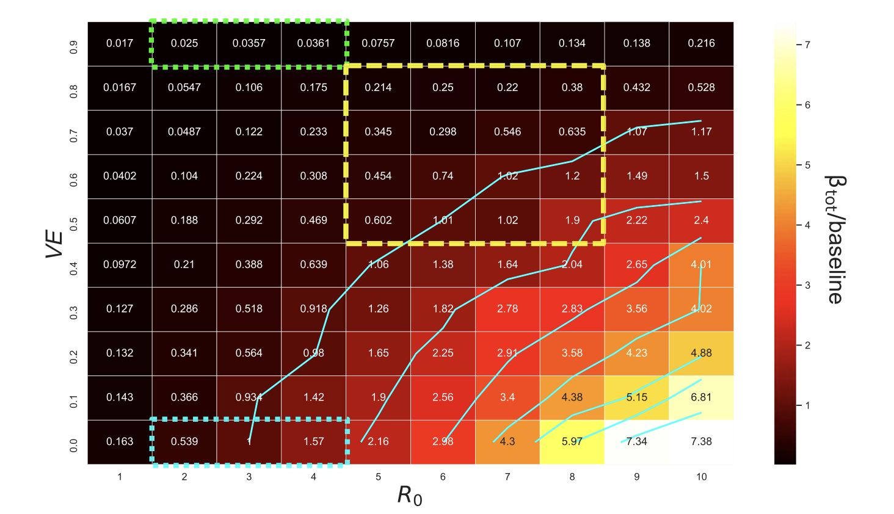

Delta Variant and the Limits of Quarantine Effectiveness
Delta Variant and the Limits of Quarantine Effectiveness
The Delta variant of SARS-CoV-2 posed a major challenge to countries that relied on strict border quarantine to prevent outbreaks. Even with high vaccination rates, the variant’s higher transmissibility raised the question: could existing quarantine systems still contain imported infections?
This analysis revisits the study by Zachreson et al. (2022), which modelled the interaction between vaccine efficacy, transmission rates, and infection-control measures within quarantine systems similar to those used in Australia and New Zealand.
Understanding the Problem
Quarantine breaches were rare before Delta, but the variant’s basic reproduction number (𝑅₀ ≈ 6–8) made containment far more difficult.
The key question addressed was:
To what extent can vaccination and infection control offset the increased transmissibility of Delta in border-quarantine environments?
Data and Methods
The authors used simulation modelling combining two components:
- a quarantine model for 100 travellers and 20 workers over a 14-day period with PCR testing and case isolation, and
- a branching-process model to estimate community-outbreak probabilities from breach events.
Scenarios varied vaccine efficacy (0–90 %), transmissibility (𝑅₀ = 3–10), and infection-control strength, allowing the study to test which combinations could maintain pre-Delta safety levels.
Key Results
Figure 1 illustrates how higher transmissibility sharply increased outbreak risk, even at high vaccine efficacy.
Code
# Created a small data frame
delta_summary <- data.frame(
Scenario = c("Base Case", "High Efficacy", "Weak Control", "Very High R₀"),
`Vaccine Efficacy (%)` = c(70, 90, 70, 80),
`R₀` = c(6, 6, 6, 8),
`Infection Control` = c("Strong", "Strong", "Weak", "Strong"),
`Relative Outbreak Risk` = c("Moderate", "Low", "High", "High"))
# Table
kable(
delta_summary,
caption = "Summary of simulated scenarios showing combined effects of vaccine efficacy, transmissibility, and infection control on outbreak risk.",
align = "lcccl")| Scenario | Vaccine.Efficacy…. | R. | Infection.Control | Relative.Outbreak.Risk |
|---|---|---|---|---|
| Base Case | 70 | 6 | Strong | Moderate |
| High Efficacy | 90 | 6 | Strong | Low |
| Weak Control | 70 | 6 | Weak | High |
| Very High R₀ | 80 | 8 | Strong | High |
Main Findings
- Vaccination alone is insufficient. At 𝑅₀ ≥ 6, vaccine efficacy above 70–80% is required just to maintain pre-Delta safety.
- Infection control remains critical. Weak quarantine protocols amplified breach risk up to 100× under low-efficacy conditions.
- Combined defences work best. High efficacy plus strong testing and isolation delayed the median time to outbreak from ≈ 15 days to > 1000 days.
Implications for Public Health Policy
The study underscores that vaccination programs and strict quarantine measures must operate together.
Relying solely on vaccine protection against highly transmissible variants risks repeated breaches.
For health agencies, this means maintaining multi-layered defence systems — vaccination, testing, ventilation, and rapid isolation — to reduce outbreak probability and manage imported risk effectively.